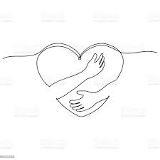
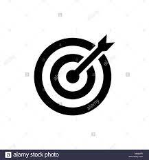
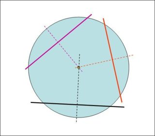

abbreviations
acc : requires accusative, pp: requires prepositional phrase
A1
(pp) شمال سوريا – يحتضن المركز
ويعتبر المعرض (acc) بهدف
Northern Syria - the center hosts (pp) with the purpose (acc) and the book fair is considered
احتضن يحتضن v.
احتضن يحتضنns. يحتضن معرضا للكتاب n.هدف
n.مركز

A2
(pp) شمال سوريا – يحتضن المركز
(acc) بهدف تشجيع الأهالي
ويعتبر المعرض هو الأول من نوعه
Northern Syria - the center hosts with the purpose of encouraging the families (acc) and the fair is considered to the first of its own kind
B1
(pp)شمال سوريا – يحتضن المركز
(acc) بهدف تشجيع الأهالي
ويعتبر المعرض هو الأول من نوعه ، حيث تراجع النشاط الفكري
Northern Syria - the center hosts with the purpose of encouraging the families (acc) and the fair is considered to the first of its own kind which refers to an intellectual activity
B2
شمال سوريا – يحتضن المركز الثقافي "معرض إدلب الأول للكتاب"
بهدف تشجيع الأهالي
على القراءة وإعادة الألق إلى الحياة الثقافية
ويعتبر المعرض هو الأول من ، حيث تراجع النشاط الفكري والثقافي في المدينة
Northern Syria - the cultural center hosts the "the first Idlib (book) fair for the authors" with the purpose of encouraging the families to read and return to the connection with the cultural life and the fair is considered to the first of its own kind which refers to an intellectual activity
C1
شمال سوريا – يحتضن المركز الثقافي "معرض إدلب الأول للكتاب" ، بهدف تشجيع الأهالي على القراءة وإعادة الألق إلى الحياة الثقافية.
ويعتبر المعرض هو الأول من نوعه منذ سيطرة المعارضة السورية على مدينة ، حيث تراجع النشاط الفكري والثقافي في المدينة على وقع المعارك
Northern Syria - the cultural center hosts the "the first Idlib (book) fair for the authors" with the purpose of encouraging the families to read and return to the connection with the cultural life
And the fair is considered to be the first of its own kind since the Syrian opposition's control over the city, which refers to an intellectual and cultural activity despite the reality of the conflicts.
C2
شمال سوريا – يحتضن المركز الثقافي بمدينة إدلب "معرض إدلب الأول للكتاب" الذي يستمر من الرابع حتى العاشر من الشهر الجاري، بهدف تشجيع الأهالي على القراءة وإعادة الألق إلى الحياة الثقافية في المدينة التي تهددها الحروب.
ويعتبر المعرض هو الأول من نوعه منذ سيطرة المعارضة السورية على مدينة إدلب في شمال غربي سوريا منذ أكثر من 6 سنوات، حيث تراجع النشاط الفكري والثقافي في المدينة على وقع المعارك وتبعات النزوح والاشتباكات
Northern Syria - the cultural center hosts the "the first Idlib (book) fair for the authors" which continues from 4th to the 10th of this month with the purpose of encouraging the families to read and return to the connection with the cultural life
And the fair is considered to be the first of its own kind since the Syrian opposition's control over the city of Idlib more than 6 years, which refers to an intellectual and cultural activity despite the reality of the conflicts and consequences of displacements and combats.